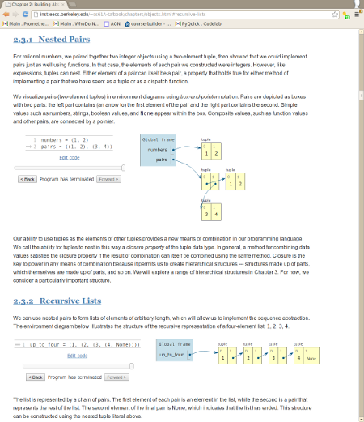

LEARN programming by visualizing code executionOnline Python Tutor is a free educational tool that helps students overcome a fundamental barrier to learning programming: understanding what happens as the computer executes each line of a program's source code. Using this tool, a teacher or student can write a Python program directly in the web browser and visualize what the computer is doing step-by-step as it executes the program. For example, I wrote the following Python program to recursively find the sum of a linked list of numbers. Click the “Forward” button to see what happens as the computer executes one line of code at a time. So far, over 200,000 people have used Online Python Tutor to understand and debug their programs, often as a supplement to learning from textbooks, lecture notes, and online programming tutorials. In addition, instructors in over a dozen universities such as MIT, UC Berkeley, UC Davis, the University of Washington, the University of Toronto, the University of Waterloo, Luther College, and Swarthmore College have used it for teaching introductory computer science and programming courses. To learn more ...
In Proceedings of the ACM Technical Symposium on Computer Science Education (SIGCSE), March 2013. |
EMBED visualizations in digital textbooksUsing a single line of JavaScript code, you can embed an Online Python Tutor visualization within your web page (as shown in the “Learn” box above). The screenshot below shows a few of these visualizations embedded within the online textbook for the introductory CS course at UC Berkeley (CS61A): These visualizations have also been embedded within two other web-based Python textbook projects: How to Think Like a Computer Scientist: Interactive Edition and Computer Science Circles. These textbooks collectively attract around 16,000 unique viewers per month and are being used in at least 25 universities around the world. |
More Details:
Other Variants:
|